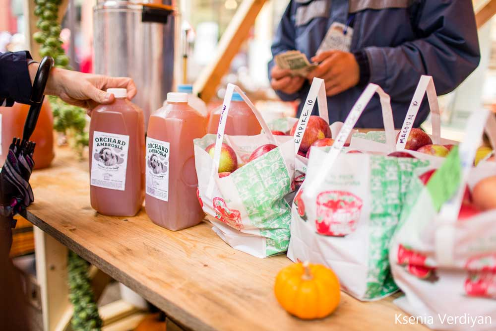
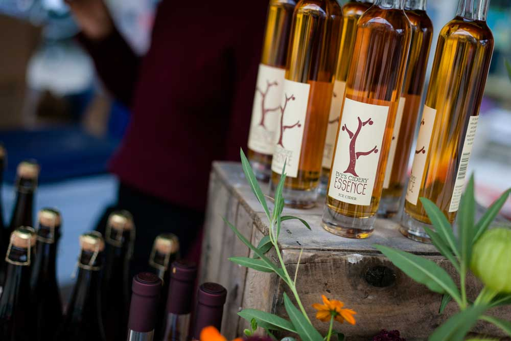

Admist COVID-19, the 2020 Apple Festive will be Distant and De-densified. Be Safe & Socially Responsible while enjoying the festival!
An Annual Fall Tradition in Ithaca
The Apple Harvest Festival takes place in Downtown Ithaca, New York right on the Ithaca Commons pedestrian mall and its surrounding streets and parks.
Enjoy cider tasting & food pairing events, a farmer showcase, the First Peoples Festival celebrating our indigenous people of New York State, and cider & pomology master talks. Take in the regional artist craft fair featuring work by 100+ artists, New York State apple growers & farmers selling crisp delicious apples, fall harvest inspired festival food favorites including tasty cider donuts, live music & family fun entertainment! Enjoy shopping for fall clothing & gifts inside local shops downtown during your visit!
Enjoy the Fall Apple Harvest Season Safely
Out of pandemic concern, you will enjoy a different Apple Festive this year. The events will feature on their distant and de-densified versions. We will hold open Air Apple Farmers Market and distant cider trail. Shops and restaurants who have safely reopened may feature apple & cider themed menus and gifts for sale too.
Next Fall, we hope we can return to the Annual Apple Harvest Festival during the last weekend in September 2021, but for now we encourage you all to enjoy apples and apples products safely, responsibly, and socially distant.